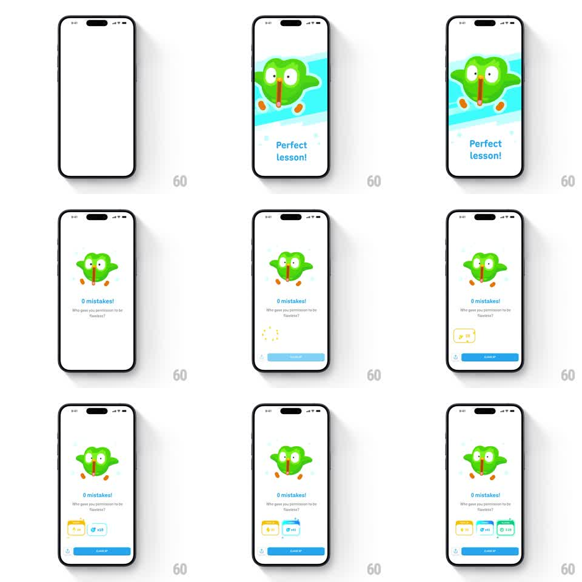

Media
Frame-by-frame

Rebuild this animation 1:1: Duolingo's flawless-lesson celebration - a shocked, wide-eyed owl stares out from a blue burst, "Perfect lesson!" lands, then "0 mistakes! Who gave you permission to be flawless?" with reward chips (+XP, multiplier, time) popping in one by one above the CLAIM XP button.

Rebuild this animation 1:1: Duolingo's flawless-lesson celebration - a shocked, wide-eyed owl stares out from a blue burst, "Perfect lesson!" lands, then "0 mistakes! Who gave you permission to be flawless?" with reward chips (+XP, multiplier, time) popping in one by one above the CLAIM XP button.
## Integration
Integration: stack-agnostic spec - springs given as stiffness/damping, timed motions as duration + curve; map every value to your framework and animation library of choice.
## Scene
Light screen: shocked owl (huge eyes, open beak) center on a cyan burst backdrop, "Perfect lesson!" headline, sassy subline, three reward chips, blue CLAIM XP button.
## Motion spec
Pattern: comedic freeze + reward cascade, ~2.5s.
- Entrance: burst scales in (300ms) behind the owl, which drops in with a bounce (translateY -24px -> 0, spring ~300/16) and holds its shocked pose.
- The owl's eyes dart once left-right (200ms) and its beak opens/closes in a silent gasp loop (1.5s).
- The burst backdrop slowly rotates its rays (20s per revolution, subtle).
- Chips: pop in left to right (spring ~400/16, 130ms stagger), the multiplier chip last with a small glow flash.
- Copy and button rise in below (250ms each, ease-out).
## Calibration
- The comedy is in the hold - the owl stays shocked while everything else settles.
- Burst rotation must be nearly imperceptible; visible spinning is carnival, not celebration.
## Reduced motion
Static owl + burst; chips fade in together.
## Don't miss
- The shocked expression is the joke - do not substitute a happy pose.
- The sassy subline ("Who gave you permission to be flawless?") is part of the design.